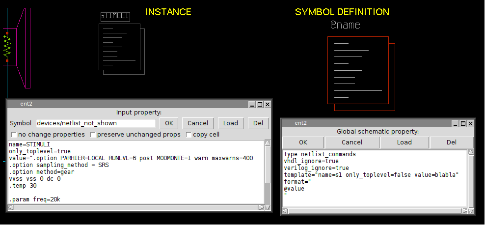
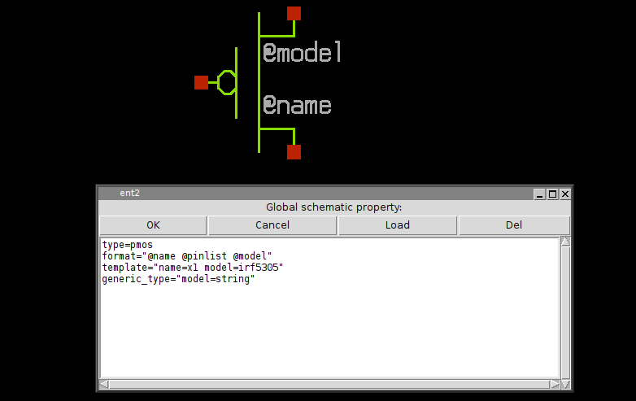
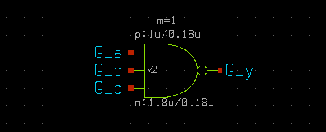
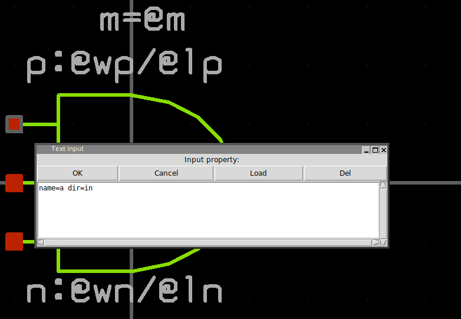
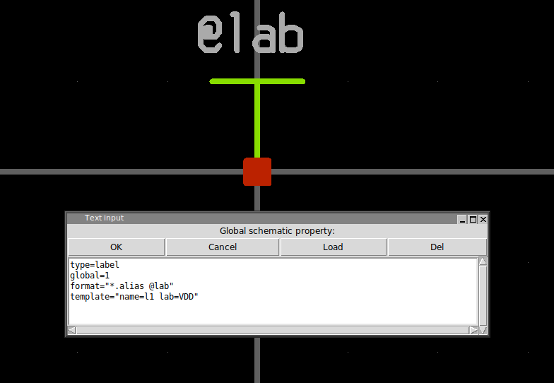

SYMBOL PROPERTY SYNTAX
GENERAL RULES
For symbols a global property string (to show it press 'q' when nothing is selected). defines at least 3 attributes:
- type defines the the type of symbol. Normally the type attribute describes the symbol and ignored by XSCHEM, but there are some special types:
- subcircuit: the symbol has an underlining schematic representation, when producing the netlist XSCHEM has to descend into the corresponding schematic. This will be covered in the subcircuits chapter.
- primitive: the symbol has a schematic representation but the netlister will not use it. This is very useful if you want to netlist a symbol using only the format (or vhdl_format or verilog_format depending on the netlist type) attribute or use the underlying schematic. By setting the attribute back to subcircuit you can quickly change the behavior.
- label: the symbol is used to label a net. These type of symbols must have one and only one pin, and the template string must define a lab attribute that is passed from component instantiation
- netlist_commands: the symbol is used to place SPICE commands into a spice netlist. It should also have a value attribute that may contain arbitrary text that is copied verbatim into the netlist. More on this in the netlist slide. 
- format:The format attribute defines the syntax for the SPICE netlist. the @
character is a 'substitution character', it means that the token that follows is a parameter
that will be substituted with the value passed at component instantiation. If no
value is given there a value will be picked from the attribute declared in the template
string.
The @pinlist is a special token that will be substituted with the name of the wires that connect to symbol pins, in the order they are created in the symbol. See the pin ordering section in the xschem properties slide. if the order of pins for a NMOS symbol is for example, d,g,s,b, then @pinlist will be expanded when producing a netlist to the list of nets that connect to the symbol drain, gate, source, body respectively. There is also a special way to define single pins: @@d for example will be replaced by XSCHEM with the net that connects to the d pin of the symbol. so for example @pinlist is equivalent to @@d @@g @@s @@b. However using @pinlist and setting the correct pin ordering in the symbol pins will make netlist generation faster. This is important for very big components with lot of pins, and @pinlist is the default when symbol is generated automatically (Symbol ->Make symbol menu of <Shift>A key). - template: Specifies default values for symbol parameters
Only symbols of type subcircuit or primitive may be descended into with the 'e' bindkey if they have a schematic view.
The order these attributes appear in the property string is not important, they can be on the same line or on different lines:
type=nmos format="@name @pinlist @model w=@w l=@l m=@m" template="name=m1 model=nmos w=5u l=0.18u m=1"
format="@name @pinlist @model w=@w l=@l m=@m" template="name=m1 model=nmos w=5u l=0.18u m=1" type=nmos
As you see double quotes are used when attribute values have spaces. For this reason if double quotes are needed in an attribute value they must be escaped with backslash \"
since the symbol global property string is formatted as a space separated list of attribute=value items, if a value has spaces in it it must be enclosed in double quotes, see for example the symbol template attribute: template="name=m1 model=nmos w=5u l=0.18u m=1" or the the format attribute: format="@name @pinlist @model w=@w l=@l m=@m". As a direct consequence a literal double quote in property strings must be escaped (\")
ATTRIBUTE SUBSTITUTION
XSCHEM uses a method for attribute substitution that is very similar to shell variable expansion
done with the $ character (for example
$HOME --> /home/user) The only
difference is that XSCHEM uses the '@' character. The choice of '@' vs '$' is simply because
in some simulation netlists shell variables are passed to the simulator for expansion, so to avoid the
need to escape the '$' in property strings a different and less used character was chosen.
A literal @ must be escaped to prevent it to be interpreted as the start of a token to be
substituted (\@).
Attribute substitution takes place in symbol format attribute and in every text, as shown in below picture.
OTHER PREDEFINED SYMBOL ATTRIBUTES
- vhdl_ignore
- spice_ignore
- verilog_ignore
- vhdl_stop
- spice_stop
- verilog_stop
- place
- generic_type
These 3 attributes tell XSCHEM to ignore completely the symbol in the respective netlist formats.
These 3 attributes will avoid XSCHEM to descend into the schematic representation of the symbol (if there is one) when building the respective netlist format. For example, if an analog block has a schematic (.sch) file describing the circuit that is meaningless when doing a VHDL netlist, we can use a vhdl_stop=true attribute to avoid descending into the schematic. Only the global property of the schematic will be netlisted. This allows to insert some behavioral VHDL code in the global schematic property that describes the block in a way the VHDL simulator can understand.
this attribute is only useable in netlist_commands type symbols and tells XSCHEM that the component instance of that symbol must be netlisted at the end, after all the other elements. This is sometimes needed for SPICE commands that must ge given at the end of the netlist. This will be explained more in detil in the netlisting slide.
generic_type defines the type of parameters passed to VHDL components. Consider the following MOS symbol definition; the model attribute is declared as string and it will be quoted in VHDL netlists.
the resulting netlist is shown here, note that without the generic_type attribute the irf5305 string would not be quoted.
entity test2 is end test2 ; architecture arch_test2 of test2 is signal d : std_logic ; signal s : std_logic ; signal g : std_logic ; begin x3 : pmos3 generic map ( model => "irf5305" ) port map ( d => d , g => g , s => s ); end arch_test2 ;
This property specifies that some parameters defined in the format string are to be considered as additional pins. This allows to realize inherited connections, a kind of hidden pins with connections passed as parameters. Example of a symbol definition for the following cmos gate:
the symbol property list defines 2 extra pins , VCCPIN and VSSPIN that can be assigned to at component instantiation. The extra property tells XSCHEM that these 2 parameters are connection pins and not parameters and thus must not be declared as parameters in the .subckt line in a spice netlist:
type=subcircuit vhdl_stop=true format="@name @pinlist @VCCPIN @VSSPIN @symname wn=@wn ln=@ln wp=@wp lp=@lp m=@m" template="name=x1 m=1 + wn=30u ln=2.4u wp=20u lp=2.4u + VCCPIN=VCC VSSPIN=VSS" extra="VCCPIN VSSPIN" generic_type="m=integer wn=real ln=real wp=real lp=real VCCPIN=string VSSPIN=string" verilog_stop=true
with these definitions the above schematic will be netlisted as:
**.subckt prova1 x2 G_y G_a G_b G_c VCC VSS lvnand3 wn=1.8u ln=0.18u wp=1u lp=0.18u m=1 **.ends * expanding symbol: customlogicLib/lvnand3 # of pins=4 .subckt lvnand3 y a b c VCCPIN VSSPIN wn=30u ln=2.4u wp=20u lp=2.4u *.opin y *.ipin a *.ipin b *.ipin c m1 net2 a VSSPIN VSSPIN nlv w=wn l=ln geomod=0 m=1 m2 y a VCCPIN VCCPIN plv w=wp l=lp geomod=0 m=1 dxm2 0 VCCPIN dnwell area='(wp + 57u)*(lp + 31u)' pj='2*(wp +57u)+2*(lp +31u)' m3 y b VCCPIN VCCPIN plv w=wp l=lp geomod=0 m=1 dxm3 0 VCCPIN dnwell area='(wp + 57u)*(lp + 31u)' pj='2*(wp +57u)+2*(lp +31u)' m6 y c net1 VSSPIN nlv w=wn l=ln geomod=0 m=1 m4 y c VCCPIN VCCPIN plv w=wp l=lp geomod=0 m=1 dxm4 0 VCCPIN dnwell area='(wp + 57u)*(lp + 31u)' pj='2*(wp +57u)+2*(lp +31u)' m5 net1 b net2 VSSPIN nlv w=wn l=ln geomod=0 m=1 .ends
Without the extra property in the cmos gate symbol the following incorrect netlist will be produced:
**.subckt prova1 x2 G_y G_a G_b G_c VCC VSS lvnand3 wn=1.8u ln=0.18u wp=1u lp=0.18u m=1 **** begin user architecture code **** end user architecture code **.ends * expanding symbol: customlogicLib/lvnand3 # of pins=4 .subckt lvnand3 y a b c wn=30u ln=2.4u wp=20u lp=2.4u VCCPIN=VCC VSSPIN=VSS *.opin y *.ipin a *.ipin b *.ipin c m1 net2 a VSSPIN VSSPIN nlv w=wn l=ln geomod=0 m=1 m2 y a VCCPIN VCCPIN plv w=wp l=lp geomod=0 m=1 dxm2 0 VCCPIN dnwell area='(wp + 57u)*(lp + 31u)' pj='2*(wp +57u)+2*(lp +31u)' m3 y b VCCPIN VCCPIN plv w=wp l=lp geomod=0 m=1 dxm3 0 VCCPIN dnwell area='(wp + 57u)*(lp + 31u)' pj='2*(wp +57u)+2*(lp +31u)' m6 y c net1 VSSPIN nlv w=wn l=ln geomod=0 m=1 m4 y c VCCPIN VCCPIN plv w=wp l=lp geomod=0 m=1 dxm4 0 VCCPIN dnwell area='(wp + 57u)*(lp + 31u)' pj='2*(wp +57u)+2*(lp +31u)' m5 net1 b net2 VSSPIN nlv w=wn l=ln geomod=0 m=1 **** begin user architecture code **** end user architecture code .ends
as you can see the VSSPIN and VCCPIN are listed as parameters and not as pins in the netlist.
Defines the direction of a symbol pin. Allowed values are in, out, inout.
a global=1 property in a label type symbol will declare the corresponding net as 'global'. Global nets in spice netlists are like global variables in a C program, these nets are accessible at any hierarchical level without the need of passing them through pin connections.
If any of these 3 properties if set to true the symbol will be netlisted in the specified format. This is only valid if the split file netlisting mode is active (Options -> Split netlist). This is very rarely used but is required in mixed mode simulations, where part of the system will be handled by an analog simulator (spice) and another part of the system by a digital Verilog / VHDL simulator.
This is the Verilog equivalent of the format property for Spice primitives. This is a valid definition for a 2 input inverted XOR gate:
verilog_format="xnor #(@risedel , @falldel ) @name ( @@Z , @@A , @@B );"
same as above for VHDL primitives.
PREDEFINED SYMBOL VALUES
- @symname
- @pinlist
- @@pin
- @sch_last_modified
- @sym_last_modified
- @time_last_modified
- @schname
- @prop_ptr
- @schprop
- @schvhdlprop
- @schverilogprop
This expands to the name of the symbol
This expands to the list of nets that connect to symbol pins in the order they are set in the symbol
This expands to the net that connect to symbol pin named pin. This substitution takes place only when producing a netlist (Spice, Verilog, VHDL) so it is allowed to use this value only in format,vhdl_format or verilog_format attributes (see Netlisting slide)
this indicates the last modification time of the .sch file of the symbol.
this indicates the last modification time of the .sym file of the symbol.
this indicates the last modification time of the schematic (.sch) containing the symbol instance.
this expands to the name of the schematic (.sch) containing the symbol instance.
this expandes to the entire property string passed to the component.
this expandes to the spice global property string of the schematic containing the symbol
this expandes to the VHDL global property string of the schematic containing the symbol
this expandes to the Verilog global property string of the schematic containing the symbol